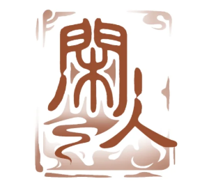

徐州广陵郡广陵县大汉绣衣校尉直属机关绣衣楼(以下简称“绣衣楼”)为广陵集团全资子公司，与西蜀隐鸢阁并列为集团两大支柱产业。绣衣楼是个温暖的大家庭。
登录 注册|  | 待定 |
|
雀部负责掌管绣衣楼中各位密探的个人信息，并核验蜂部传来的情报是否准确。雀部成员严谨细致，对每一位密探的背景、能力、任务执行情况等、有着详尽的记录。他们确保信息的准确与安全，为绣衣楼的决策提供可靠依据 |
|
蛾部成员是誓死效忠绣衣楼的死士，他们常常被派遣去执行极度危险的任务蛾部成员为了绣衣楼甘愿赴汤蹈火、出生入死，每个人都怀抱着极高的决心和觉悟。他们深知自己的使命，愿意为绣衣楼的荣耀与利益出生入死，展现了极高的觉悟与勇气。 |
|
鸢部成员擅长卧底和造谣，常常执行一些危险的任务。他们擅长深入敌后以假乱真，制造混乱，为绣衣楼的行动创造有利条件。鸢部成员在执行危险任务时总能展现出惊人的毅力和智慧，为绣衣楼的胜利立下赫赫战功。 |
|
蜂部负责收集信息和打探情报的工作，是一个独立的体系。蜂部成员擅长通过伪装等方式为绣衣楼获取情报。他们在情报战场上敏锐而果断，是绣衣楼不可或缺的情报力量。蜂部成员运用各种手段，如伪装和渗透，为绣衣楼获取珍贵的情报信息。 |